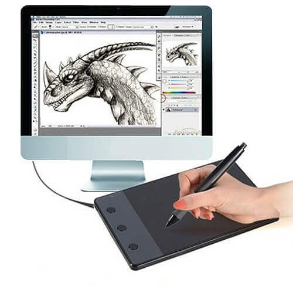
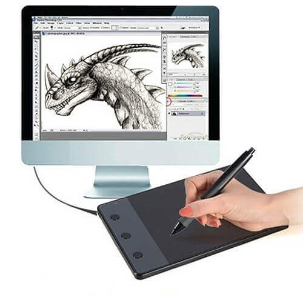
 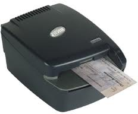
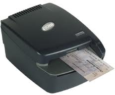
 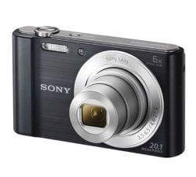
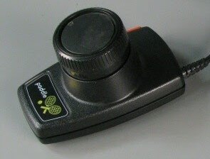
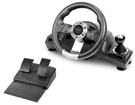
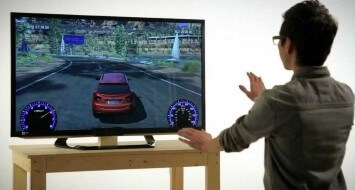
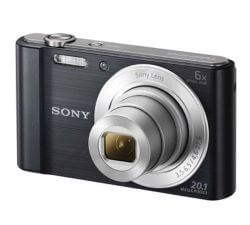
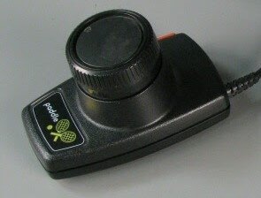
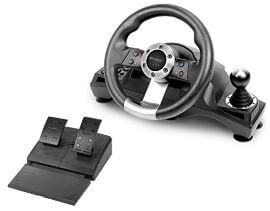
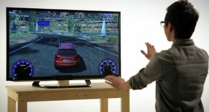


Input device enables the user to send data, information, or control signals to a computer. The Central Processing Unit (CPU) of a computer receives the input and processes it to produce the output.
The keyboard is a basic input device that is used to enter data into a computer or any other electronic device by pressing keys. It has different sets of keys for letters, numbers, characters, and functions. Keyboards are connected to a computer through USB or a Bluetooth device for wireless communication.
Types of keyboards: There can be different types of keyboards based on the region and language used. Some of the common types of keyboards are as follows:
It is the most commonly used keyboard with computers in modern times. It is named after the first six letters of the top row of buttons and is even popular in countries that do not use Latin-based alphabet. It is so popular that some people think that it is the only type of keyboard to use with computers as an input device.
It is considered the standard French keyboard. It is developed in France as an alternative layout to the QWERTY layout and is mainly used in France and other European countries. Some countries have manufactured their own versions of AZERTY.
Its name is derived from the first six letters that appear on the top left row of the keyboard. The Q and W keys in AZERTY keyboard are interchanged with A and Z keys in QWERTY keyboard. Furthermore, in AZERTY keyboard M key is located to the left of the L key.
AZERTY keyboard differs from QWERTY keyboard not only in the placement of letters but also in many other ways, e.g., it gives emphasis on accents, which is required for writing European languages like French.

This type of keyboard layout was developed to increase the typing speed by reducing the finger movement while typing. The most frequently used letters are kept in a home row to improve typing.
The mouse is a hand-held input device which is used to move cursor or pointer across the screen. It is designed to be used on a flat surface and generally has left and right button and a scroll wheel between them. Laptop computers come with a touchpad that works as a mouse. It lets you control the movement of cursor or pointer by moving your finger over the touchpad. Some mouse comes with integrated features such as extra buttons to perform different buttons.
The mouse was invented by Douglas C. Engelbart in 1963. Early mouse had a roller ball integrated as a movement sensor underneath the device. Modern mouse devices come with optical technology that controls cursor movements by a visible or invisible light beam. A mouse is connected to a computer through different ports depending on the type of computer and type of a mouse.
It is a stationary input device that has ball mechanism to move the pointer or cursor on the screen. The ball is half inserted in the device and can be easily rolled with finger, thumb or the palm to move the pointer on the screen. The device has sensor to detect the rotation of ball. It remains stationary; you don't need to move it on the operating surface. So, it is an ideal device if you have limited desk space as you don't need to move it like a mouse.
It has a system of a ball and several rollers to track its movement. It is a corded type of mouse. A mechanical mouse can be used for high performance. The drawback is that they tend to get dust into the mechanics and thus require regular cleaning.

An optical mouse uses optical electronics to track its movement. It is more reliable than a mechanical mouse and also requires less maintenance. However, its performance is affected by the surface on which it is operated. Plain non-glossy mouse mat should be used for best results. The rough surface may cause problems for the optical recognition system, and the glossy surface may reflect the light wrongly and thus may cause tracking issues.
As the name suggests, this type of mouse lacks cable and uses wireless technology such as IrDA (infrared) or radio (Bluetooth or Wi-Fi) to control the movement of the cursor. It is used to improve the experience of using a mouse. It uses batteries for its power supply.
The scanner uses the pictures and pages of text as input. It scans the picture or a document. The scanned picture or document then converted into a digital format or file and is displayed on the screen as an output. It uses optical character recognition techniques to convert images into digital ones. Some of the common types of scanners are as follows
It has a glass pane and a moving optical CIS or CCD array. The light illuminates the pane, and then the image is placed on the glass pane. The light moves across the glass pane and scans the document and thus produces its digital copy. You will need a transparency adapter while scanning transparent slides.

It is a small manual scanning device which is held by hand and is rolled over a flat image that is to be scanned. The drawback in using this device is that the hand should be steady while scanning; otherwise, it may distort the image. One of the commonly used handheld scanners is the barcode scanner which you would have seen in shopping stores.
In this scanner, the document is inserted into the slot provided in the scanner. The main components of this scanner include the sheet-feeder, scanning module, and calibration sheet. The light does not move in this scanner. Instead, the document moves through the scanner. It is suitable for scanning single page documents, not for thick objects like books, magazines, etc.

Drum scanner has a photomultiplier tube (PMT) to scan images. It does not have a charge-coupled device like a flatbed scanner. The photomultiplier tube is extremely sensitive to light. The image is placed on a glass tube, and the light moves across the image, which produces a reflection of the image which is captured by the PMT and processed. These scanners have high resolution and are suitable for detailed scans.

It is designed to scan photographs. It has high resolution and color depth, which are required for scanning photographs. Some photo scanners come with in-built software for cleaning and restoring old photographs.
A joystick is also a pointing input device like a mouse. It is made up of a stick with a spherical base. The base is fitted in a socket that allows free movement of the stick. The movement of stick controls the cursor or pointer on the screen.
The first joystick was invented by C. B. Mirick at the U.S. Naval Research Laboratory. A joystick can be of different types such as displacement joysticks, finger-operated joysticks, hand operated, isometric joystick, and more. In joystick, the cursor keeps moving in the direction of the joystick unless it is upright, whereas, in mouse, the cursor moves only when the mouse moves.
A light pen is a computer input device that looks like a pen. The tip of the light pen contains a light-sensitive detector that enables the user to point to or select objects on the display screen. Its light sensitive tip detects the object location and sends the corresponding signals to the CPU. It is not compatible with LCD screens, so it is not in use today. It also helps you draw on the screen if needed. The first light pen was invented around 1955 as a part of the Whirlwind project at the Massachusetts Institute of Technology (MIT).
Digitizer is a computer input device that has a flat surface and usually comes with a stylus. It enables the user to draw images and graphics using the stylus as we draw on paper with a pencil. The images or graphics drawn on the digitizer appear on the computer monitor or display screen. The software converts the touch inputs into lines and can also convert handwritten text to typewritten words.
It can be used to capture handwritten signatures and data or images from taped papers. Furthermore, it is also used to receive information in the form of drawings and send output to a CAD (Computer-aided design) application and software like AutoCAD. Thus, it allows you to convert hand-drawn images into a format suitable for computer processing.
The microphone is a computer input device that is used to input the sound. It receives the sound vibrations and converts them into audio signals or sends to a recording medium. The audio signals are converted into digital data and stored in the computer. The microphone also enables the user to telecommunicate with others. It is also used to add sound to presentations and with webcams for video conferencing. A microphone can capture audio waves in different ways; accordingly the three most common types are described below:
It is the most commonly used microphone with a simple design. It has a magnet which is wrapped by a metal coil and a thin sheet on the front end of the magnet. The sheet transfers vibrations from sound waves to the coil and from coil to electric wires which transmit the sound like an electrical signal.
It is designed for audio recording and has a very sensitive and flat frequency response. It has a front plate called diaphragm and a back plate parallel to the front plate. When sound hits the diaphragm, it vibrates the diaphragm and alters the distance between the two plates. The changes in distance are transmitted as electric signals.
It is known for its reliability. It has a thin ribbon made of aluminum, duraluminum, or nanofilm suspended in a magnetic field. The sound waves cause vibrations in the ribbon, which generate a voltage proportional to the velocity of the vibration. The voltage is transmitted as an electrical signal. Early ribbon microphones had a transformer to increase the output voltage, but modern ribbon microphones come with advanced magnets to produce a strong signal.
MICR computer input device is designed to read the text printed with magnetic ink. MICR is a character recognition technology that makes use of special magnetized ink which is sensitive to magnetic fields. It is widely used in banks to process the cheques and other organizations where security is a major concern. It can process three hundred cheques in a minute with hundred-percent accuracy. The details on the bottom of the cheque (MICR No.) are written with magnetic ink. A laser printer with MICR toner can be used to print the magnetic ink.
The device reads the details and sends to a computer for processing. A document printed in magnetic ink is required to pass through a machine which magnetizes the ink, and the magnetic information is then translated into characters.
OCR computer input device is designed to convert the scanned images of handwritten, typed or printed text into digital text. It is widely used in offices and libraries to convert documents and books into electronic files.
It processes and copies the physical form of a document using a scanner. After copying the documents, the OCR software converts the documents into a two-color (black and white), version called bitmap. Then it is analyzed for light and dark areas, where the dark areas are selected as characters, and the light area is identified as background. It is widely used to convert hard copy legal or historic documents into PDFs. The converted documents can be edited if required like we edit documents created in ms word.
It is a digital device as it captures images and records videos digitally and then stores them on a memory card. It is provided with an image sensor chip to capture images, as opposed to film used by traditional cameras. Besides this, a camera that is connected to your computer can also be called a digital camera.
It has photosensors to record light that enters the camera through the lens. When the light strikes the photosensors, each of the sensors returns the electrical current, which is used to create the images.
It is a simple input device that is widely used in games. It is a wheel that is held by hand and looks like a volume knob on a stereo that is used to increase or decrease the volume. Paddle moves or controls cursor or any other objects in the game in a back-and-forth motion. It is widely used as an alternative to the joystick. Besides this, the term paddle also refers to many handheld devices designed to control a function in an electronic device, computer, etc.
It is used as an input device in racing video games such as car racing games or in driving programs as virtual simulators to steer a vehicle. It works like the real steering wheel by allowing you to take a right or left turn. A steering wheel may be provided with acceleration and brake pedal devices and a mechanism for shifting gears. Thus, it makes racing games more adventurous and entertaining.
These devices take human gestures as input. There are many such devices that respond to gestures. For example, Kinect is one such device that observes the movement of a player's body and interprets these movements as inputs to video games. This feature is also available in certain tablets and smartphones where you can perform certain tasks such as taking pictures using finger gestures such as swiping, pinching, etc.
As the name suggests, it is a pointing input device that is designed to point at and shoot the targets on the screen in a video game, or arcade, etc. The light gun was used for the first time on the MIT Whirwind computer. When the gun is pointed at the target on the screen and the trigger is pulled, the screen goes blank for a fraction of a second. During this moment, the photodiode, which is present in the barrel, determines where the gun is pointed. For example, shooting ducks in a duck hunt game.
It is usually found in laptops as a substitute for the mouse. It allows you to move or control the cursor on the screen using your finger. Just like a mouse, it also has two buttons for right and left click. Using the touchpad, you can perform all the tasks that you do with a mouse, such as selecting an object on the screen, copy, paste, delete, open a file or folder, and more.
It is a hardware device designed to control the functioning of a device, e.g., a TV remote that can be used to change channels, increase or decrease the volume, from a distance without leaving the seat. The first cordless TV remote was invented by Dr. Robert Adler of Zenith in 1956. The remote sends the electromagnetic waves to communicate with the device. These waves can be infrared rays, radio waves, etc.
It is the display screen of a device such as a smartphone, tablet, etc., that allows users to interact or provide inputs to the device by using their finger. Today, most of the electronic devices come with touchscreen as an alternative to a mouse for navigating a graphical user interface. For example, by touching, you can unlock your phone, open emails, open files, play videos, etc. Besides this, it is used in lots of devices such as Camera, Car GPS, Fitness machine, etc.
The concept of the touch screen was first introduced and published by E.A. Johnson in 1965. The first touch screen was developed at the beginning of the 1970s by CERN engineers Frank Beck and Bent Stumpe.
VR stands for virtual reality. It is an artificial or virtual environment which is generated by computers. A person can interact with virtual objects of this artificial environment using some input devices such as headsets, gloves, headphones, etc. For example, he or she can find himself or herself walking on a beach, watching a football match, walking in the sky, etc., without actually doing all this.
Any camera which is connected to a computer is called a webcam. The in-built camera provided on a computer can also be considered a webcam. It is an input device as it can take pictures, and can be used to record videos if required. The pictures and videos are stored in the computer memory and can be displayed on the screen if required. Although it works almost the same as the digital camera, it is different from a digital camera, as it is designed to take compact digital photos that can be uploaded easily on the webpages and shared with others through the internet.
Biometrics refers to a process in which a person is identified through his or her biological features such as fingerprints, eye cornea, face structure, etc. It is done by using biometric devices, which can be of different types based on their scanning features and abilities, such as:

It is designed to identify a person by scanning his or her face. It takes the face measurements of a person. For example, the distance between eyes, nose, and mouth, etc., accordingly, it confirms the identity of a person. Besides this, it is smart enough to differentiate between a person's picture and the real person.
The hand of a person can also be used to verify his or her identity as every person has a unique pattern of veins in the palm, just like fingerprints. This device takes advantage of this feature; it identifies a person by scanning the palm of his hand. It uses infrared light to scan veins' patterns and blood flowing in them. Palm is even more unique than fingerprints.
It scans the fingerprints to identify people or for biometric authentication. This device is developed, keeping in mind the fact that no two persons in the world can have the same fingerprints. It is widely used in companies as a fingerprint attendance system to mark the attendance of employees. This type of scanners captures the pattern of valleys and ridges found on a finger and store it in the memory or database. When you press your finger on the given space, it verifies the identity by using its pattern-matching software.

It scans the retina or iris of a person's eye to confirm the identity. This device is more secure than others as it is next to impossible to copy the retina or iris. It works by mapping the retina's blood vessel patterns of the eye. The blood vessels of retina absorb light more easily as well as can be identified with appropriate lighting.
In this scan, a beam of low-energy infrared light falls on the retina through the scanner's eyepiece. Then, the software captures the network of blood vessels in the retina and uses it to verify a person's identity.

It records the voice of a person and digitizes it to create a distinctive voice print or template. The voiceprints are stored in the database, and are used to verify the voice of a person to confirm his or her identity. The person is required to speak in the normal or same voice that was used to create a voice template. It is not much reliable as it can be misused using a tape recording.